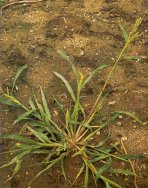
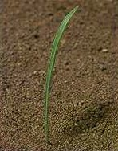
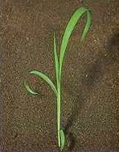

KÖZÖNSÉGES KAKASLÁBFŰ
ECHINOCHLOA CRUS-GALLI (L.) P. Beauv. (ECHCG)
ÉLETFORMA: T4
TERMÉS: A termés pelyvás, toklászos és csupasz szem
alakjában egyaránt előfordulhat, a toklászos forma azonban a leggyakoribb
szántóföldi talajaink felszínén. A középső, háti helyzetű pelyva domború,
öterű, rövid szálkákkal, a hasi pelyva lapos, héterű és csúcsából szálka ered.
A toklászos szem háti része domború, sárgás vagy szürkés színű, a hasi toklász
felszíne sík. A szem 2,5-3 mm hosszú és barnásszürke. A csíra mintegy kétharmada a
szem hosszának. Ezermagtömege 1,5- 2,5 g.
CSÍRANÖVÉNY: Az érett termések 4-8 hónapon
keresztül nyugalmi állapotban vannak. A tejes érés stádiumában betakarított
növények szemtermései is csíráznak. A csírázás minimális hőmérséklete 10-15
°C, az optimális pedig 30-35 °C. A legtöbb csíranövény 2-3 cm mélységből
csírázik, de bizonyos körülmények között 10-15 cm mélységből is képes
csírázni. Fény nem szükséges a csírázáshoz, de jelenléte elősegíti azt. A talaj
70-90%-os vízkapacitásánál csírázik a legjobban. Újabb vizsgálatok szerint anaerob
viszonyok között is megfigyelhető bizonyos mértékű csírázás. A csírázás fő
időszaka május, de csapadékos nyár esetén júniusban és júliusban egy második
csírázási periódus is megfigyelhető. A csíranövény legfiatalabb (középső)
levele begöngyölt. A fiatal növény széles levelei alapjukon pirosasbarna ibolyásan
sávozottak. Az első mellékhajtás a csírázást követő második héten már
kifejlődhet.
KIFEJLETT NÖVÉNY: Egy-egy növény általában 10-15
mellékhajtást képez. A hajtások a 150 cm magasságot is elérhetik, szalmaszáruk
erős, alapi részükön könyöklő. A levelek lemezének felszíne kopasz, fehér
középérrel, a levéllemezeknek az alaphoz közeli széle gyakran hullámos. A
levélhüvelyek csaknem zártak, oldalról laposra nyomottak. A virágzat álfüzér,
amely buga vagy fürtszerűen rendezett. A füzérkék egyvirágúak, zöldesibolya
színűek. A levéllemezalap fülecske és nyelvecske nélküli.
ELTERJEDÉSE: Hazánk egyik legveszélyesebb egyszikű
gyomnövénye. Speciális ökológiai igénye nincs. Formagazdag, versengés nélküli,
nyílt területeken csillag alakúan, laposan szétterül.
 |
 |